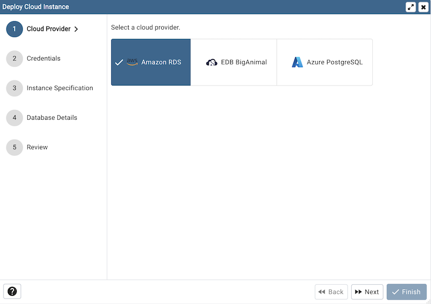
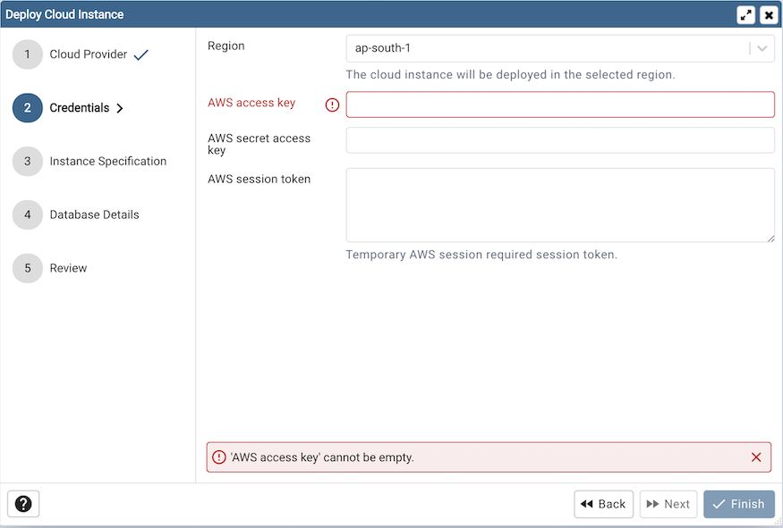
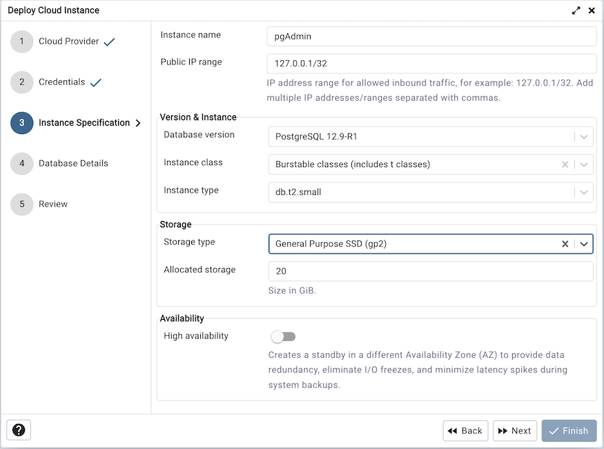
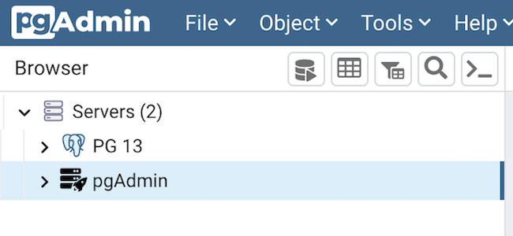

Amazon AWS RDS Cloud Deployment¶
To deploy a PostgreSQL server on the Amazon AWS cloud, follow the below steps.
Once you launch the tool, select the Amazon RDS option. Click on the Next button to proceed further.
In the Credentials dialog, provide the region in which you want to deploy the instance along with the AWS access key and AWS secret access key. Provide AWS session token only if your AWS session is temporary.
To proceed further, click on the next button. Before going further, pgAdmin will validate your credentials.
Use the fields from the Instance Specification tab to specify the Instance details.
Use the Instance name field to add an instance name for the PostgreSQL server; the name specified will be displayed in the Browser tree control too.
Use the Public IP field to specify the IP Address range for permitting the inbound traffic.
Use the Database version field to specify the PostgreSQL version to deploy.
Use the Instance class field to allocate the computational, network, and memory capacity required by planned workload of this DB instance.
Use the Instance type field to select the instance type.
Use the Storage type field to select the instance storage type. Three options are available. General Purpose (SSD) storage, Provisioned IOPS (SSD) and Magnetic storage.
Use the Allocated storage field to specify the storage capacity in GiB.
Use the Provisioned IOPS in case of Provisioned IOPS (SSD) storage type.
Use the High Availability option to specify High Availability option. This option creates a standby in a different Availability Zone(AZ).
Use the fields from the Database Details tab to specify the Instance details.
Use the drop-down list box in the Server group field to select the parent node for the server; the server will be displayed in the Browser tree control within the specified group.
Use the Database name field to add the database name for the PostgreSQL server.
Use the Username field to specify the name of a role that will be used when authenticating with the server.
Use the Password field to provide a password that will be supplied when authenticating with the server.
Use the Confirm password field to repeat the password.
Enter the listener port number of the server host in the Port field.
At the end, review the Instance details that you provided. Click on Finish button to deploy the instance on Amazon RDS.
Once you click on the finish, one background process will start which will deploy the instance in the cloud and monitor the progress of the deployment. You can view all the background process with there running status and logs on the Processes tab
The Server will be added to the tree with the cloud deployment icon. Once the deployment is done, the server details will be updated.